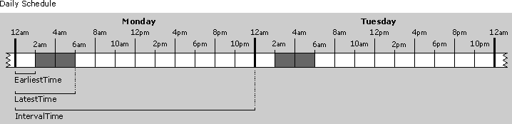
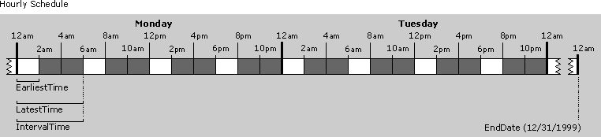
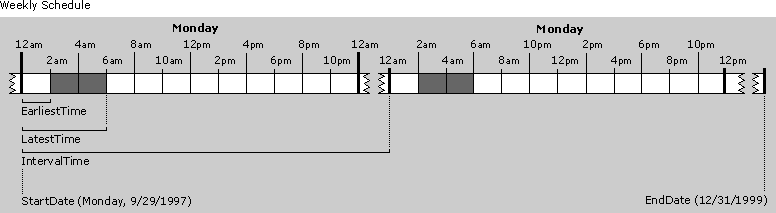

| ||||||
The following sections explain Active Channel™ features, as well as what Web publishers need to know to take advantage of them.
Web publishers can create a default schedule in the CDF file that Microsoft® Internet Explorer 4.0 and later uses to determine when the channel information on the user's computer should be updated. Specifying a schedule with a range of valid update times can help to effectively manage server loads when delivering content to Internet Explorer through channels. The actual time Internet Explorer updates the channel is randomly selected from the valid time range for each update. The CDF file specifies the valid time range for updates by including the EARLIESTTIME and LATESTTIME elements as child elements of the SCHEDULE element. The INTERVALTIME element specifies how often, on average, the updates will occur. The following examples illustrate different update schedules for Active Channel sites.
Note The shaded areas in the diagrams below represent the range of time during which the channel update will occur.
The schedule shown below would cause the channel to be updated every day at a random time between 2 A.M. and 6 A.M. Since the publisher didn't specify a start or stop date, the schedule takes effect immediately and doesn't expire.
<SCHEDULE> <IntervalTime Day="1" /> <EarliestTime Hour="2" /> <LatestTime Hour="6" /> </SCHEDULE>

For channels that deliver extremely time-critical information, a channel may need to be updated many times during the day. The example below shows a channel that is updated four times per day. The updates occur sometime after the second hour of each six-hour interval. This schedule is set to expire on December 31, 1999, at which point no further updated information will be downloaded for this channel.
<SCHEDULE STOPDATE="1999-12-31"> <IntervalTime Hour="6" /> <EarliestTime Hour="2" /> <LatestTime Hour="6" /> </SCHEDULE>

A schedule that updates a channel once a week is shown below. Because this weekly schedule started on a Monday, this channel will be updated every Monday sometime between 2 A.M. and 6 A.M. until it reaches the expiration date. This schedule takes effect on Monday, September 29, 1997, and expires on December 31, 1999.
<SCHEDULE StartDate="1997-09-29" STOPDATE="1999-12-31"> <IntervalTime Day="7" /> <EarliestTime Hour="2" /> <LatestTime Hour="6" /> </SCHEDULE>

By default, users accessing the Internet with a dial-up connection need to manually update their channels. Users connected to a network can use the publisher's recommended schedule specified in the CDF file for updating channels.
The HTTP cookie standard provides a powerful mechanism for personalizing Web content. The CDF file integrates this standard with Internet Explorer 4.0 and later. A Web publisher who wants to create a personalized channel can use regular HTTP cookies to deliver personalized information to users by dynamically generating a custom CDF file based on user preferences. The CDF file thus leverages the existing cookie standard for personalized HTML on the Web and takes it one step further by allowing personalized channels for individual users. Web publishers can create personalized channels for users or groups of users by performing the following tasks:
Web publishers using active server pages with Microsoft Internet Information Server (IIS) to dynamically generate personalized CDF files (named with an .asp extension) must insert the following line at the top of the CDF file:
<% Response.ContentType = "application/x-cdf" %>
Note As an alternative for IIS 4.0 site authors, the CDF file can be created with a .cdx extension instead of .asp, and the MIME content type line above can be omitted.
This ensures that the server will return the correct MIME/content type to the browser. Without this line, the browser will not perform the expected actions for CDF files. For example, the CDF file might display as text in the browser window rather than launch the Add Channel dialog box.
Web publishers implementing HTTP authentication in their channels need to make sure Internet Explorer (version 4.0 and later) has the user name and password so it can update the channel content without user intervention. To accomplish this, publishers can force Internet Explorer to ask users for this information during the channel subscription setup process by using the LOGIN element in the CDF file. When the channel subscription wizard encounters this element in a CDF file, it will prompt users to enter their user name and password. When the channel setup is complete, the user name and password are stored with the channel's subscription properties. Therefore, subsequent CDF files sent to that user for updating the channel don't require the LOGIN element. Internet Explorer will automatically authenticate HTML pages when using Basic, NTLM, RPA, and HTML forms.
If the authentication process is based on an HTML form, Internet Explorer needs to be able to fill out the form correctly. For the login process to be successful, follow the guidelines just mentioned for the HTTP authentication, and make sure the HTML form complies with these requirements:
<FORM METHOD="POST" ACTION="http://www.joyware.tld/login">
<INPUT TYPE=TEXT NAME="username" SIZE=20>
or
<INPUT TYPE=TEXT NAME="user" SIZE=20>
<INPUT TYPE=PASSWORD NAME="password" SIZE=20>
Note All other elements on the form will be posted with their default values.
Important Note The page-hit logging feature in Internet Explorer 4.0 and later enables Active Channel sites to collect the same page-hit information from offline users as they can already collect from online users. This feature can easily be disabled by a home user or a corporate administrator, if desired.
Page-hit logging collects information for Web publishers about activity on their channel pages by logging page hits in the browser, screen saver, and Active Desktop™ interface in both offline and online modes. The page-hit engine allows the collection of data for the time and date that the channel pages were loaded into the browser.
Using the CDF file, publishers can tightly control exactly what page hits are logged. They can also define the maximum time to archive the data. To enable page-hit logging of a channel, the CDF file should contain the LOG element, indicating what items are to be logged, and the LOGTARGET element, indicating where the log file should be sent. Web publishers should use discretion when using the LOG element in the CDF file and select specific items for logging. Be aware that a large number of items marked for logging could potentially create large log files, which could raise bandwidth issues for the user when the log file is uploaded to the LOGTARGET URL. The uploading of the log file back to the server occurs when the CDF file is updated. For more information about the LOG and LOGTARGET elements, including examples, see the CDF Reference.
Note Items marked for logging must have an HREF attribute that falls under the URL of the CDF file or the path specified in the LOGTARGET element.
Web publishers receive the page-hit logging files in the directory (URL) specified in the LOGTARGET element, in "Extended Log File Format,"  as defined by the World Wide Web Consortium (W3C). Every page hit that is logged has two types of records associated with it. The first record is a header that contains the URL of the channel item being logged. The records subsequent to the header are details of the page hits. Here is a sample record:
as defined by the World Wide Web Consortium (W3C). Every page hit that is logged has two types of records associated with it. The first record is a header that contains the URL of the channel item being logged. The records subsequent to the header are details of the page hits. Here is a sample record:
#Fields: s-URI http://www.joyware.tld/products/default.htm #Fields: c-context c-cache c-date c-time c-duration N 1 06-02-1997 19:12:37 00:00:04 T 1 06-03-1997 11:38:04 00:00:23
These records indicate that the URL "http://www.joyware.tld/products/default.htm" was viewed in normal mode on June 2, 1997, from the cache at 7:12 P.M. for four seconds, and again in full-screen view on June 3 at 11:38 A.M. for 23 seconds. The context value can be "N", "T", "D", or "S" to indicate whether the URL was viewed in a normal browser window, full screen view (Theater View), as an Active Desktop item, or in the Internet Explorer screen saver, respectively. The value for the cache field can be "1" to indicate the URL was retrieved from the local cache or "0" to indicate the URL was retrieved from the site itself. The Web publisher can filter out online or offline records by using the SCOPE attribute of the LOGTARGET element. The date field shows the date on which the URL was viewed. The time value indicates what time (on the local computer) the URL was viewed, and the duration indicates how long the user viewed the page. The time and duration fields are in HH:MM:SS format, while the date is in MM-DD-YYYY format.
Web publishers that receive page-hit log files can extract and process the data listed above in any way they choose. However, Microsoft provides the following two methods for parsing the information in the log file:
The following Perl script can be used to parse the log file.
require("cgi-lib.pl");
$logfile='log/cdfpost.dat';
$method=$ENV{REQUEST_METHOD};
$clen=$ENV{CONTENT_LENGTH};
print "Content-type: text/html\n\n";
print "<HTML>\n";
&open_logfile;
&print_env;
&ProcessRawdata;
print "Just to show we got here too <BR>\n";
print "</HTML>\n";
sub ProcessRawdata
{
&add_logdata;
close(OUT);
}
sub print_env
{
print OUT "<!--Request method : ", $method, "\n";
print OUT "Server : ", $ENV{SERVER_NAME}, "\n";
print OUT "Script : ", $ENV{SCRIPT_NAME}, "\n";
print OUT "Client : ", $ENV{REMOTE_ADDR}, "\n";
print OUT "Content-length : ", $clen, "-->\n";
}
sub open_logfile
{
if (-e $logfile) {
open (OUT, ">>$logfile");
} else {
open (OUT, ">$logfile");
}
}
sub add_logdata
{
open(IN, "-");
binmode IN;
while ($clen) {
print OUT getc(IN);
$clen=$clen-1;
};
print OUT "\n";
}
When running Microsoft Internet Information Server (IIS), you can use the ISAPI DLL to parse the log file. For more information about how to accomplish this, see the readme file located in the inetsdk\samples\iislog directory. Note that this sample also demonstrates how to decompress encoded posted strings, and the associated CDF file must contain the HTTP-EQUIV element as follows:
<LOGTARGET href="http://www.joyware.tld/logging/" METHOD="POST">
<HTTP-EQUIV NAME="encoding-type" VALUE="gzip">
</LOGTARGET>
Additional information is available on how to programmatically access the log file in the page-hit logging API reference.
As part of the CDF file, the publisher may designate a specific URL to be downloaded as content for the Channel Screen Saver. This screen saver supports standard HTML pages, including scripting, images, Java applets, and ActiveX® Controls. Screen saver content pages can include scripting and Dynamic HTML support to provide a page that dynamically changes the content, style, and position of the HTML elements on the screen. These pages are displayed on the full screen during computer idle times. The Channel Screen Saver cycles through enabled channel screen savers, allocating the same amount of display time to each one (by default, 30 seconds per channel). A channel's screen saver page is automatically included in the rotation when the channel is subscribed to, or subsequently through the Screen Saver Properties dialog box. If a user subscribes to a channel containing a screen saver page and the Channel Screen Saver isn't currently selected, a dialog box will be displayed.
Publishers can enable a specific URL as a screen saver page by including the USAGE element in a channel's CDF file. In the following example, the HTML page at URL "http://www.joyware.tld/screensaver.htm" is defined as the screen saver for the channel in which it occurs.
<ITEM href="http://www.joyware.tld/screensaver.htm">
<USAGE VALUE="ScreenSaver"></USAGE>
</ITEM>
Note The screen saver item's USAGE element must be a child of the top-level CHANNEL element. If the USAGE element occurs within a nested CHANNEL element representing a subchannel, the screen saver will be ignored.
Unlike many screen savers, the user can move the mouse and click objects without immediately dismissing the Internet Explorer screen saver. Clicking a link opens a new browser window and dismisses the screen saver. Pressing a key or clicking a location that is not an image, link, or object also closes the screen saver. Moving the mouse causes the screen saver toolbar to appear in the upper-right corner of the screen. From this toolbar, the user can close the screen saver or access the screen saver properties.
Active Desktop items are small Web pages or HTML components, such as a Java applet or an ActiveX control, that are displayed directly on the Active Desktop screen. Users can customize their desktops by installing Active Desktop items designed for Internet Explorer 4.0 and later.
The best way to make Active Desktop items accessible to your users is by providing a button on a Web page that is linked to a CDF file. The CDF file specifies the location of the item on your server, its USAGE as a "DesktopComponent", and contains a default SCHEDULE for updating the item on the user's desktop. When users click the button, they will encounter a dialog box for adding the item to their desktops.
There are a number of extensions to the CDF vocabulary that enable you to customize the appearance and behavior of Active Desktop items. Using these extensions, you can establish a default HEIGHT and WIDTH for your Active Desktop items. Once a user adds your item to the Active Desktop screen, you can restrict the user's ability to resize the component by setting the VALUE attribute to "No" in the CANRESIZE, CANRESIZEX, or CANRESIZEY elements.
Did you find this topic useful? Suggestions for other topics? Write us!
© 1999 Microsoft Corporation. All rights reserved. Terms of use.